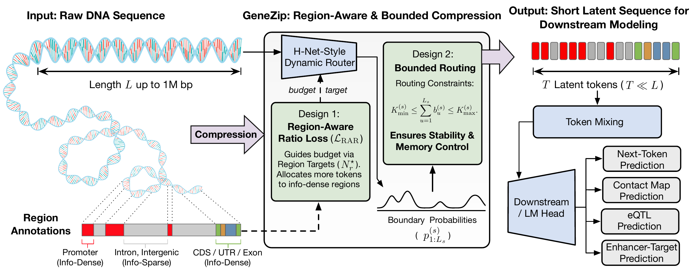
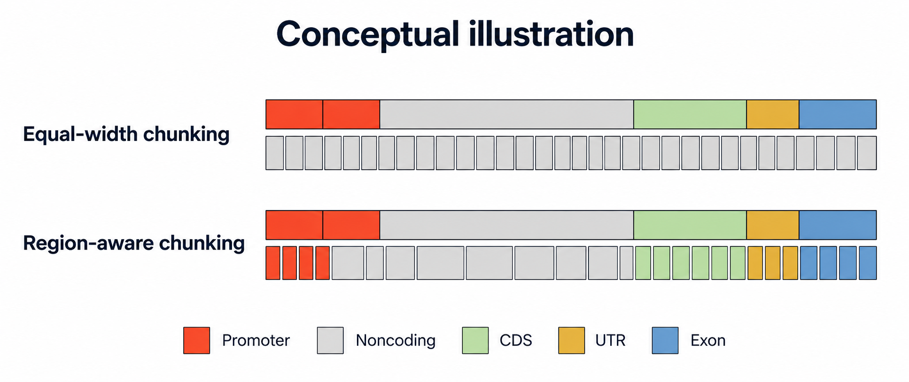
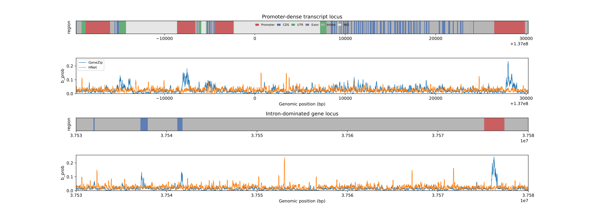
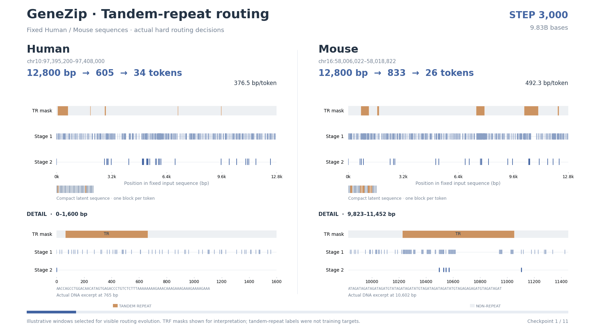
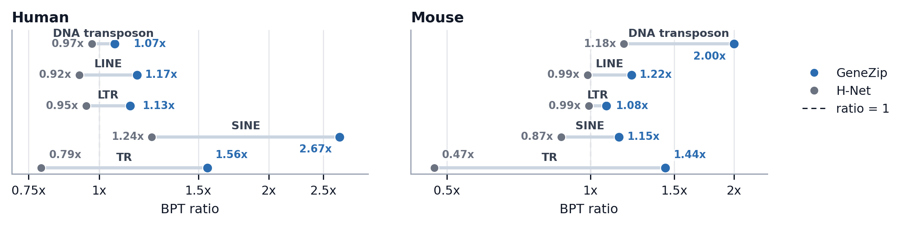

Dynamic routing
Predict chunk boundaries from DNA sequence, so chunk lengths can vary along the genome.
NeurIPS 2026
1Mila – Québec AI Institute2Université de Montréal3University of Ottawa
4National Research Council of Canada5HEC Montréal

01 / Motivation
Promoters, exons and long intronic or intergenic spans carry different kinds of information. GeneZip learns where to retain finer resolution, so long DNA sequences can be compressed while preserving information useful for genomic prediction.

02 / Method
GeneZip builds on H-Net's dynamic routing to turn raw DNA into a shorter sequence of latent tokens. Regional targets guide where resolution is retained, while bounded routing keeps token counts within a tractable range.
Predict chunk boundaries from DNA sequence, so chunk lengths can vary along the genome.
Training objective
Use gene-structure annotations to train the router toward regional compression targets, preserving finer resolution in promoters and genic regions under the default prior.
Routing constraint
Enforce lower and upper token-count limits to prevent empty representations and excessive memory use.
03 / Compression Analysis
137.6 BPT
Base pairs per token
GeneZip-70M · pretraining validation
+0.31 PPL
Validation perplexity increase
vs. uncompressed Mamba2-84M
36.1×
Inference speedup
100 × 450-kb inputs · GeneZip-70M vs. JanusDNA-7.7M · single H100 · largest verified batch per model
GeneZip is pretrained on human DNA. Its learned routing also transfers to mouse sequences, without annotations at inference. Follow illustrative human (left) and mouse (right) windows across training checkpoints. The composition charts below average 256 fixed windows per species, alongside their original sequence composition.


GeneZip is trained with gene-structure labels, without repeat-specific supervision. Yet it learns to allocate fewer tokens per base to repetitive DNA than to the surrounding sequence: emergent redundancy-aware compression.

These animation windows were selected for visible routing changes across checkpoints; they are illustrative examples, not population-level estimates. The quantitative results below summarize matched repeat and non-repeat positions. Window and checkpoint details.
GeneZip and H-Net predict repeat sequences with nearly identical perplexity, but allocate tokens differently. GeneZip has higher repeat-to-background compression ratios in all ten evaluated subsets, spanning transposon-derived and tandem repeats.

04 / Downstream performance
One pretrained GeneZip-70M checkpoint, adapted separately to each task, outperforms H-Net and U-Net on all four DNALongBench task metrics below. Among models sharing the leakage-controlled pretraining setup, GeneZip leads on CMP, eQTL and ETGP; uncompressed Mamba2 remains strongest on TISP.
SCC ↑
AUROC ↑
AUPRC ↑
PCC ↑
In a separate inference benchmark on 100 sequences of 450 kb, GeneZip takes 6.34 seconds versus H-Net's 11.78 seconds on one H100, a 1.86× speedup. U-Net is faster at 4.85 seconds; GeneZip delivers stronger prediction across all four tasks.
| Model | Pretraining group | CMP SCC | eQTL AUROC | ETGP AUPRC | TISP PCC |
|---|---|---|---|---|---|
| HyenaDNA-6.6M | DNALongBench-official | 0.115 | 0.514 | 0.249 | 0.132 |
| Caduceus-Ph-7.7M | DNALongBench-official | 0.133 | 0.566 | 0.380 | 0.109 |
| Caduceus-PS-7.7M | DNALongBench-official | 0.127 | 0.538 | 0.376 | 0.108 |
| JanusDNA-7.7M | External-pretraining | 0.159 | 0.840 | 0.438 | 0.002 |
| NTv3-100M-pre | External-pretraining | 0.136 | 0.792 | 0.440 | 0.194 |
| Evo2-1B | External-pretraining | 0.018 | 0.754 | 0.095 | -0.002 |
| Mamba2-84M | Leakage-controlled-pretraining | 0.111 | 0.762 | 0.322 | 0.294 |
| U-Net-70M | Leakage-controlled-pretraining | 0.131 | 0.769 | 0.244 | 0.008 |
| H-Net-70M | Leakage-controlled-pretraining | 0.118 | 0.809 | 0.131 | 0.235 |
| GeneZip-70M | Leakage-controlled-pretraining | 0.133 | 0.817 | 0.375 | 0.274 |
@inproceedings{zhao2026genezip,
title = {GeneZip: Region-Aware Compression for Long-Context DNA Modeling},
author = {Zhao, Jianan and Liu, Xixian and Zhan, Zhihao and Yuan, Xinyu and Guo, Hongyu and Tang, Jian},
booktitle = {Advances in Neural Information Processing Systems},
year = {2026}
}